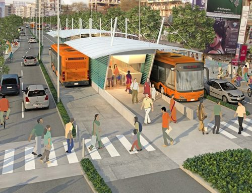

Tips & Info untuk Perjalanan yang Lebih Efisien
Di halaman ini, Anda akan menemukan berbagai tips dan informasi untuk membantu Anda mengoptimalkan pilihan transportasi Anda. Dari penggunaan transportasi umum hingga bersepeda, kami memberikan panduan untuk perjalanan yang lebih efisien dan ramah lingkungan.
Menggunakan transportasi umum bisa menjadi pilihan yang lebih efisien dan ramah lingkungan. Berikut beberapa tips:
- Rencanakan perjalanan Anda dengan memeriksa jadwal bus atau kereta terlebih dahulu.
- Gunakan aplikasi transportasi untuk mendapatkan update waktu nyata.
- Cari tahu jalur alternatif untuk menghindari kemacetan.
Bersepeda adalah salah satu cara terbaik untuk menghindari kemacetan dan menjaga kesehatan. Tips:
- Pastikan sepeda Anda dalam kondisi baik sebelum berangkat.
- Gunakan jalur sepeda yang tersedia untuk keamanan.
- Pakai helm dan peralatan keselamatan lainnya.

Mengurangi jejak karbon bisa dilakukan dengan memilih moda transportasi yang lebih ramah lingkungan:
- Pertimbangkan berjalan kaki atau bersepeda untuk jarak dekat.
- Gunakan transportasi umum daripada kendaraan pribadi bila memungkinkan.
- Bagi perjalanan dengan teman untuk mengurangi emisi karbon.

Transportasi Ramah Lingkungan
Pelajari lebih lanjut tentang bagaimana Anda bisa berkontribusi pada lingkungan dengan memilih transportasi yang ramah lingkungan.
Pelajari Lebih Lanjut